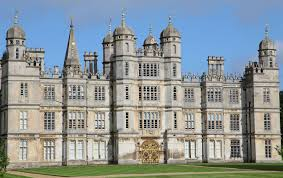
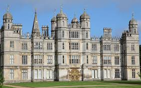
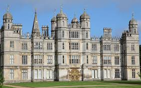

The main weakness of the original Motte and Bailey castles was the wood of which allowed it to be constructed so quick. This wood was easily flammable so the attackers could simply fire a flaming arrow. As a result of the vulnerability resulted in the first change: the transition from wood to stone. The thick strong walls offered protection to the soldiers inside. When undermining, the square corners were the most vulnerable as the pressure was unevenly spread causing it to fall down more easily. The solution to this was to have round corners and even to have several walls surrounding the inner part of the castle. Several walls were also useful aginst cannons since they could easily destroy walls with ease Now you can also see the iron port cullis - an iron gate with spikes that drops down to close the gate. This was the repellant to battering rams - which ploughed through wooden doors. We also have machicolations: holes in the battlements of a castle where the defenders would drop boiling tar and heavy rocks onto attackers. Finally, the last step in the evollution was the conversion of military locations to homes for nobles/royals. The cause of the change was the development of cannons which were too powerful and there was nothing that could be done about it. Now castles were just homes the rich and powerful instead.
Next Previous Home
